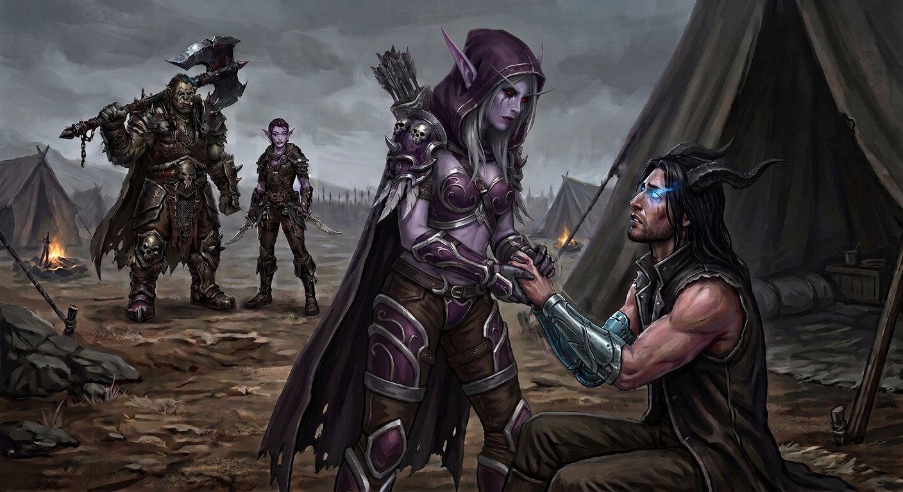

Capítulo Vinte e Cinco
O que o corpo sabe
A manhã chegou do jeito que a Gorja permitia: cinza, uniforme, sem nenhuma indicação de que o mundo lá fora — se é que havia um mundo lá fora — tivesse mudado alguma coisa durante a noite.
Mas dentro do abrigo, alguma coisa tinha mudado.
Nathan acordou antes de todos. Sem sobressalto, sem pesadelo, sem prótese brilhando. Acordou inteiro, lúcido, com a lembrança clara da noite anterior — o sono sem sonhos, a mão fria na dele, o silêncio que tinha sido suficiente.
E com uma coisa a mais.
Uma coisa que não tinha nome e que tinha começado em algum momento entre o sono e o despertar, como se o corpo tivesse recebido uma mensagem durante a noite e só agora, com os olhos abertos, ele estivesse conseguindo ler.
Medo.
Não o medo que ele conhecia — o medo da fenda, o medo do Vazio, o medo de não ser ele mesmo. Esse era diferente. Era um medo que vinha de dentro do corpo, dos músculos, dos ossos, de algum lugar primitivo que não passava pelo raciocínio e não pedia permissão. Era o tipo de medo que um animal sente quando o chão sob os pés começa a vibrar com uma frequência que significa armadilha, e o corpo inteiro grita não vai antes que o cérebro tenha tempo de perguntar por quê.
A porta.
O corpo dele sabia alguma coisa sobre aquela porta que a cabeça não sabia. E o que o corpo sabia era: não abre. Não vai. É uma armadilha.
✦
Nathan sentou-se devagar. O movimento foi cuidadoso, controlado — do jeito que ele fazia tudo desde que tinha voltado do ano sozinho, como se cada gesto precisasse ser aprovado antes de acontecer. Olhou para as mãos. A de metal estava quieta. A de pele — a direita — tremia.
Não muito. Não de um jeito que alguém que não estivesse olhando diretamente perceberia. Mas tremia. Um tremor fino, constante, que começava na ponta dos dedos e subia pelo antebraço até o cotovelo, onde parava como se tivesse encontrado uma fronteira.
Ele fechou a mão. Abriu. Fechou de novo. O tremor continuou.
— Merda — sussurrou, para ninguém.
Olhou para o lado. Sylvanas ainda dormia — ou fingia que dormia, porque com ela a diferença era mínima. O capuz ainda estava caído, o cabelo prateado ainda estava solto, e a expressão ainda era aquela de quem tinha relaxado por um segundo na vida e tinha gostado.
Nathan não queria que ela visse.
Não porque tivesse vergonha — ou talvez um pouco por isso, mas não era o principal. Era porque ele tinha dito "amanhã" com a voz firme, e tinha apertado a mão dela no escuro com firmeza, e tinha dormido sem sonhar, e tudo aquilo tinha sido verdade — mas agora era manhã, e o corpo tinha acordado com uma opinião diferente, e ele não sabia o que fazer com isso.
Se contasse, ela ia saber. Se ela soubesse, ela ia ter que decidir se ele estava pronto ou não, e ela era honesta demais para mentir, e se ela dissesse "não", ele ia aceitar, porque ele confiava nela mais do que em si mesmo, e aí a porta não ia abrir e eles iam embora e ele ia passar o resto da vida — ou do que sobrasse dela — sabendo que tinha fugido.
E se ela dissesse "sim" mesmo assim, ele ia abrir a porta com medo, e abrir uma porta com medo era exatamente o que o corpo estava gritando para não fazer.
Então ele não contou.
✦
Levantou-se. Vestiu o sobretudo — sem mangas, como sempre, expondo os dois braços. A prótese do braço esquerdo estava fria e quieta, sem brilho, sem resposta a nada. O braço direito continuava tremendo. Ele enfiou a mão no bolso do sobretudo e ficou assim, com a mão escondida, e pensou que se ninguém olhasse muito de perto, ninguém ia perceber.
Varokh estava na entrada, como sempre. O machado no colo, os olhos na Gorja.
— Bom dia — disse Nathan.
Varokh olhou para ele. Meio segundo. Depois voltou os olhos para a Gorja.
— Dormiu?
— Dormi. Sem sonhar.
— Bom.
Nathan sentou-se ao lado dele. A perna direita começou a tremer. Não a mão — a perna inteira, do joelho para baixo, um tremor ritmado que ele tentou controlar apertando o pé contra o chão. Não funcionou. O tremor continuou, como se tivesse vontade própria.
Varokh não comentou. Mas Nathan viu — pelo canto do olho — que o orc tinha desviado o olhar para a perna dele por exatamente um décimo de segundo, e depois tinha voltado para a Gorja com uma expressão que Nathan não soube ler.
✦
Elyra acordou depois. Fez café — ou o que passava por café — e distribuiu em silêncio, o que era incomum para ela, e Nathan percebeu que ela também estava diferente. Não triste. Não preocupada. Concentrada. Do jeito que ela ficava antes de uma operação, quando o cérebro dela estava organizando variáveis e calculando probabilidades e guardando os comentários para depois.
Sylvanas acordou por último. O capuz subiu antes mesmo de ela ficar completamente de pé — o gesto automático de quem tinha passado séculos fazendo aquilo e não ia parar agora, mesmo depois de uma noite em que o capuz tinha caído. O cabelo prateado desapareceu. O rosto voltou a ser o de sempre: firme, calculado, sem nenhuma fresta.
Mas os olhos — os olhos vermelhos — encontraram os de Nathan por meio segundo a mais do que o necessário.
E Nathan desviou.
Desviou porque não queria que ela visse. Porque os olhos dele, ele sabia, não eram bons em esconder coisas — nunca tinham sido, nem quando eram castanhos, nem agora que eram azuis. E se ela olhasse para ele por mais de meio segundo, ela ia ver. Ia ver o medo. Ia ver o tremor. Ia ver que o corpo dele tinha acordado com uma opinião diferente da que ele tinha dado na noite anterior.
E aí ia ser real.
✦
O grupo se reuniu em volta do fogo. Varokh conferiu o machado. Elyra conferiu as facas. Sylvanas conferiu as flechas. Nathan conferiu a própria mão — a direita, a que tremia — e a enfiou de volta no bolso.
— Dois quilômetros — disse Varokh. — Se a gente sair agora, chega em quarenta minutos. Menos se a Elyra não parar para reclamar das pedras.
— Eu reclamo das pedras porque as pedras são reclamáve—
— Elyra.
— Estou calada.
Sylvanas olhou para Nathan.
— Prontos?
E foi aí que o corpo dele traiu ele.
A mão direita saiu do bolso. Não porque ele quis — porque o tremor ficou forte demais para ficar escondido, e a mão saiu como se precisasse de ar, como se o bolso tivesse ficado pequeno demais para conter o que estava acontecendo dentro dela. E a mão estava tremendo. Visivelmente. Não um tremor fino que só quem olhasse de perto veria — um tremor que qualquer pessoa com dois olhos funcionais podia ver.
E a perna direita também. O joelho subindo e descendo num ritmo que ele não controlava, como se o corpo estivesse tentando fugir sem consultar o dono.
Varokh viu. Elyra viu. Sylvanas viu.
Ninguém disse nada.
Nathan tentou parar. Apertou a mão contra a coxa. Apoiou o peso na perna esquerda. Não funcionou. O corpo continuava tremendo, e o medo continuava ali, sólido, pesado, ocupando um espaço dentro dele que não tinha sido desenhado para caber medo daquele tamanho.
— Eu estou bem — disse.
Era mentira, e todo mundo sabia que era mentira, e ele sabia que todo mundo sabia, e a mentira ficou flutuando no ar entre os quatro como uma coisa física, constrangedora, impossível de ignorar.
✦
Sylvanas se levantou.
Não foi até ele imediatamente. Primeiro conferiu o arco — gesto automático, meio segundo, a corda, a tensão. Depois andou até ele. Não parou a três metros. Parou na frente dele, a um passo de distância, e olhou para baixo com aquela expressão que ele conhecia tão bem — a expressão de quem está medindo alguma coisa, calculando alguma coisa, e chegando à conclusão de que a coisa medida precisa de atenção imediata.
— Mostra a mão.
— Estou bem.
— Nathan. Mostra a mão.
Ele mostrou. A mão direita tremia na frente dos dois, e o tremor era pior do que ele achava — era visível, era óbvio, era o tipo de tremor que diz eu estou com medo mais alto do que qualquer palavra.
Sylvanas segurou a mão dele. A mão fria segurou a mão que tremia, e segurou firme, do jeito que ela segurava tudo — sem delicadeza desnecessária, sem pena, com a firmeza de quem sabe exatamente o que está fazendo.

— A perna também — disse.
Ele olhou para baixo. O joelho direito subia e descia sozinho.
— Sim.
— Desde quando?
— Desde que acordei.
Ela não disse nada por um tempo. A mão dela continuava segurando a dele, e o tremor continuava, e o fogo estalava baixinho, e Varokh e Elyra estavam em silêncio — Varokh olhando para a Gorja, Elyra olhando para as próprias mãos.
— O corpo sabe — disse Sylvanas, devagar. — Antes da cabeça. Antes de tudo. O corpo sabe quando alguma coisa está errada, e ele te avisa do jeito que consegue. Tremor é aviso. É o corpo dizendo: cuidado.
— Eu sei.
— Mas cuidado não é o mesmo que não vai.
Nathan levantou os olhos. Os olhos azuis encontraram os vermelhos, e havia alguma coisa nos olhos dela que ele não via com frequência — não era urgência, não era cálculo. Era confiança. Não nele — ela sempre tinha confiado nele. Era confiança na decisão. Como se ela já tivesse calculado tudo e tivesse chegado à conclusão de que o medo era esperado, era natural, e não era motivo para parar.
— Você disse ontem que o que o Colecionador colocou dentro de você não é mais forte do que o que você construiu aqui — disse ela. — Você lembra?
— Lembro.
— O medo é o corpo lembrando que a porta é perigosa. Isso não é covardia. Isso é informação. O corpo está te dizendo: isso aqui é perigoso, vá com cuidado. E a gente vai com cuidado. A gente sempre vai com cuidado.
— E se o corpo estiver certo? E se for uma armadilha?
Sylvanas não desviou.
— Pode ser — disse. — E se for, a gente enfrenta. Do mesmo jeito que a gente enfrentou tudo até agora. Com Varokh segurando o centro. Com Elyra no flanco. Com você prevendo. E comigo a três metros de você.
Uma pausa.
— E se precisar ser menos de três metros, vai ser menos de três metros. Como foi ontem.
Nathan olhou para ela. O tremor na mão diminuiu um pouco — não sumiu, mas diminuiu, como se a mão tivesse ouvido a voz dela e tivesse decidido que podia relaxar um pouco, que podia confiar um pouco.
— Eu estou com medo — disse. E a voz saiu baixa, mais baixa do que ele queria, e a frase ficou no ar entre os dois como uma confissão, como uma coisa que ele não tinha planejado dizer mas que tinha saído assim mesmo.
— Eu sei — disse Sylvanas. — E você vai mesmo assim.
Não era pergunta. Era constatação. Do mesmo jeito que ela tinha dito "eu preciso" na noite em que o beijou — não era escolha, era fato. Ele estava com medo. E ele ia mesmo assim. Porque era isso que ele fazia. Porque era isso que ele tinha feito quando entrou na fenda sozinho, quando construiu a primeira prótese, quando aprendeu a lutar, quando ficou, quando ficou, quando ficou.
Ele assentiu.
Não foi um gesto firme. Foi um gesto pequeno, contido, do jeito que se assente quando se tem medo mas se vai mesmo assim. E Sylvanas soltou a mão dele — devagar, sem pressa — e deu um passo para trás. Um passo. Não três. Um.
— Prontos? — disse, olhando para os quatro.
✦
Varokh se levantou. O machado na mão. Os olhos na porta invisível a dois quilômetros de distância.
— Pronto.
Elyra se levantou. Seis facas no cinto. O arco nas costas.
— Pronta. E antes que alguém pergunte: não, eu não estou com medo. Estou com raiva. É diferente. Raiva eu sei usar.
Sylvanas olhou para Nathan.
Nathan se levantou. A perna direita ainda tremia um pouco. A mão direita ainda tremia um pouco. O medo ainda estava ali — sólido, pesado, ocupando espaço.
Mas ele se levantou.
— Pronto — disse.
E a voz saiu firme. Não porque o medo tinha ido embora — porque ele tinha decidido que o medo não ia ser a última palavra. Que a última palavra ia ser dele, e a última palavra era pronto, e pronto significava eu estou com medo e eu vou mesmo assim, e isso, ele pensou, era a coisa mais corajosa e mais covarde que ele já tinha dito na vida.
As duas coisas ao mesmo tempo.
✦
Caminharam os dois quilômetros em silêncio.
Varokh na frente, o machado na mão, os olhos varrendo o terreno. Elyra no flanco, aparecendo e desaparecendo entre as pedras do jeito que só ela sabia fazer. Sylvanas a três passos atrás de Nathan — não a três metros, a três passos, a distância que ela tinha reduzido desde ontem e que não ia aumentar de novo.
E Nathan no meio. Com o sobretudo sem mangas e a prótese no braço esquerdo e a tatuagem no braço direito e os chifres e as asas que tremiam de vez em quando — não de medo, mas de energia, do Vazio pulsando dentro dele em resposta a alguma coisa que estava ficando mais perto.
A porta apareceu no horizonte.
Selada. Escura. Com os sigilos apagados. Esperando.
E Nathan sentiu — no peito, no braço de metal, no lugar onde o Vazio vivia — que a porta sentiu ele também.
O tremor na mão direita aumentou.
E ele continuou andando.